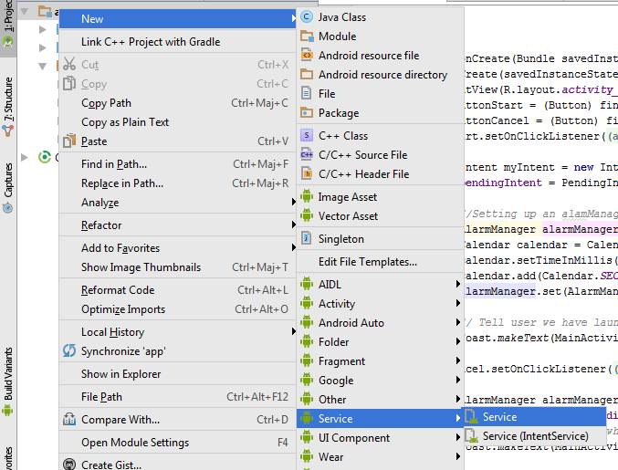

<!doctype html>
<html lang="en">

	<head>
		<meta charset="utf-8">

		<title>TP-Services</title>

		<meta name="description" content="A framework for easily creating beautiful presentations using HTML">
		<meta name="author" content="Hakim El Hattab">

		<meta name="apple-mobile-web-app-capable" content="yes" />
		<meta name="apple-mobile-web-app-status-bar-style" content="black-translucent" />

		<meta name="viewport" content="width=device-width, initial-scale=1.0, maximum-scale=1.0, user-scalable=no">

		<link rel="stylesheet" href="reveal.js/css/reveal.css">
		<link rel="stylesheet" href="reveal.js/css/theme/black.css" id="theme">

		<!-- For syntax highlighting -->
		<link rel="stylesheet" href="reveal.js/lib/css/zenburn.css">

		<!-- If the query includes 'print-pdf', use the PDF print sheet -->
		<script>
			document.write( '<link rel="stylesheet" href="reveal.js/css/print/' + ( window.location.search.match( /print-pdf/gi ) ? 'pdf' : 'paper' ) + '.css" type="text/css" media="print">' );
		</script>

		<!--[if lt IE 9]>
		<script src="reveal.js/lib/js/html5shiv.js"></script>
		<![endif]-->
	</head>

	<body>

		<div class="reveal">

            <div class="slides">

                
<section data-markdown data-separator="^\n---\n$" data-separator-vertical="^\n--\n$" data-notes="^Note:">
<script type="text/template">
## TP-Services

### [Android Studio]


Code initial : 
[https://github.com/whispyy/TP-Services/tree/local_service_initial](http://github.com/whispyy/TP-Services/tree/local_service_initial)


*JF Durand - Mercredi 16 Novembre 2016*
</script>
</section>

<section data-markdown data-separator="^\n---\n$" data-separator-vertical="^\n--\n$" data-notes="^Note:">
<script type="text/template">
## Introduction (1/2)

**Qu'est ce qu'un Service ?**

* un composant similaire à une activité (cycle de vie)
* ne possède pas d'interface graphique
* est capable de communiquer avec d'autres composants

---

## Introduction (2/2)

**Exemples concret d'utilisation ?**

- Exemple 1 :
Envoyer une notification pour un rappel d'événement à tel date. <!-- .element: class="fragment" -->
- Exemple 2 : 
Lire une séquence audio en arrière plan. <!-- .element: class="fragment" -->
</script>
</section>

<section data-markdown data-separator="^\n---\n$" data-separator-vertical="^\n--\n$" data-notes="^Note:">
<script type="text/template">
## Différents types de services

**Différents types de service**

- Services locaux :
   - lancé par une activité
   - se termine lorsqu'il a terminé d'effectuer ses opérations.
- Sercices distants
   - interaction client-serveur
   - se lance et se termine via un ServiceConnection.


--

**Cycles de vie des différents services**


--

**Les flags**

* START_NOT_STICKY : En cas d'arrêt du service par le système, il n'est pas recrée
* START_STICKY : En cas d'arrêt du service par le système, il sera recrée mais le paramètre Intent sera null.
* START_REDELIVER_INTENT : En cas d'arrêt du service par le système, il sera recrée à l'identique.

--

**Les deux façons d'implémenter un service**

* Service : permet de créer un service où le code sera executé dans le "thread" principale.
* IntentService : permet de créer un service et gère une file d'attente des requête par ordre d'arrivée à chaque appel de startService().
</script>
</section>

<section data-markdown data-separator="^\n---\n$" data-separator-vertical="^\n--\n$" data-notes="^Note:">
<script type="text/template">
## Création du Service

### 1. Récupération des sources

Télécharger l'archive ici : [https://github.com/whispyy/TP-Services/tree/local_service_initial](http://github.com/whispyy/TP-Services/tree/local_service_initial)

Ou clonez le dépot depuis mon git : [https://github.com/whispyy/TP-Services](https://github.com/whispyy/TP-Services) et basculez sur la branche : local_service_initial


--

### 2. Analyse de l'activité

L'activité est composée de deux boutons : Start et Cancel.
Start permet de lancer le service et Cancel de l'annuler.

Le service est ici appelé comme suit :

```java
Intent myIntent = new Intent(MainActivity.this, MyService.class);
```

```java
alarmManager.set(
	AlarmManager.RTC_WAKEUP, 
	calendar.getTimeInMillis(), 
	pendingIntent);
```

Il faut imaginer ici que tout cela revient à faire une programmation d'un délai suivi d'un appel à ```startService(myIntent)``` .

--

### 3. Création d'un service local

#### 3.1 Initialisation du service



Note:

Nommer le service : MyService.java

--

#### 3.2 Remplir le service

**L'objectif est de créer un service ou l'on va pouvoir visualiser le cycle de vie d'un service.**

Pour cela je propose de commencer par implémenter des toasts sur chaque fonction du service en question.

> Il est nécéssaire de ré-écrire les méthodes d'un service distant :
>
> onBind(Intent intent) 
>
>onUnbind(Intent intent)

*Vérifier dans les paramètres android l'execution du service.*

--

### 3.3 Implémenter une notification

```java
@Override
    public int onStartCommand(...){
        /*
         * Here must be the code to execute
         * Voir PDF
         */

        super.onStartCommand(intent,flag,startId);
        return START_NOT_STICKY;
    }
```


</script>
</section>

<section data-markdown data-separator="^\n---\n$" data-separator-vertical="^\n--\n$" data-notes="^Note:">
<script type="text/template">
# Service local VS distant

Ce service sera appelé par :

```java
bindService(
	Intent nomService, 
	ServiceConnection connexion, 
	int flag)
```

La connexion est gérée via le composant ServiceConnection d'Android.

--

```java
    @Override
    public void onCreate() {}

    @Override
    public IBinder onBind(Intent intent) {}

    @Override
    public boolean onUnbind(Intent intent) {}

    //Eventuellement une fonction onRebind(Intent intent);

    @Override
    public void onDestroy() {}
```
</script>
</section>

<section data-markdown data-separator="^\n---\n$" data-separator-vertical="^\n--\n$" data-notes="^Note:">
<script type="text/template">
# Conclusion

<!-- .slide: data-background="white " --> 

Nous avons réalisé un service local simple.

En savoir plus sur les services :

* un IntentService
* un service distant


Code Final : [https://github.com/whispyy/TP-Services/tree/local_service_final](https://github.com/whispyy/TP-Services/tree/local_service_final)

</script>
</section>


            </div>

		</div>

		<script src="reveal.js/lib/js/head.min.js"></script>
		<script src="reveal.js/js/reveal.js"></script>

		<script>

			// Full list of configuration options available here:
			// https://github.com/hakimel/reveal.js#configuration
			Reveal.initialize({
				controls: true,
				progress: true,
				history: true,
				center: true,

				theme: Reveal.getQueryHash().theme, // available themes are in /css/theme
				transition: 'default', // default/cube/page/concave/zoom/linear/fade/none

                

				// Optional libraries used to extend on reveal.js
				dependencies: [
					{ src: 'reveal.js/lib/js/classList.js', condition: function() { return !document.body.classList; } },
					{ src: 'reveal.js/plugin/markdown/marked.js', condition: function() { return !!document.querySelector( '[data-markdown]' ); } },
					{ src: 'reveal.js/plugin/markdown/markdown.js', condition: function() { return !!document.querySelector( '[data-markdown]' ); } },
					{ src: 'reveal.js/plugin/highlight/highlight.js', async: true, callback: function() { hljs.initHighlightingOnLoad(); } },
					{ src: 'reveal.js/plugin/zoom-js/zoom.js', async: true, condition: function() { return !!document.body.classList; } },
                    
					{ src: 'reveal.js/plugin/notes/notes.js', async: true, condition: function() { return !!document.body.classList; } }
                    
                    
				]
			});

		</script>

	</body>
</html>
